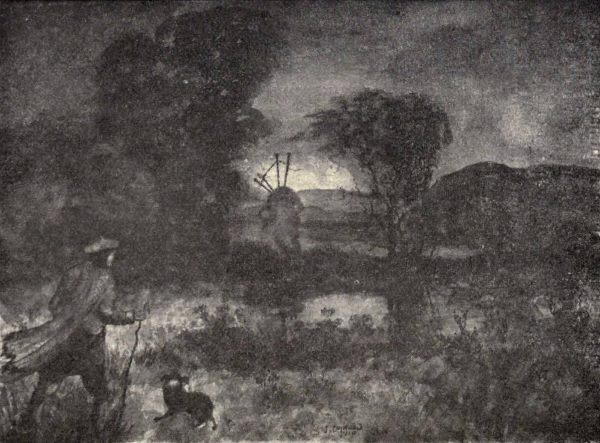
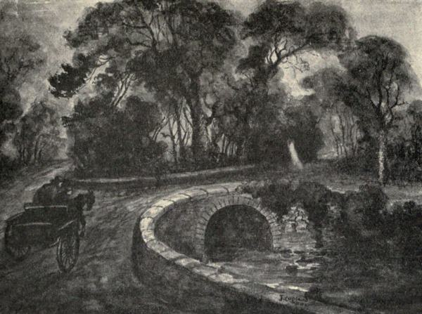
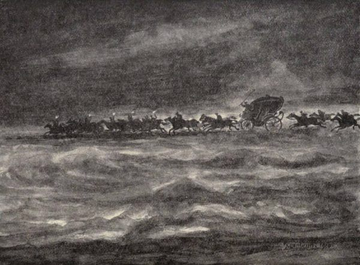
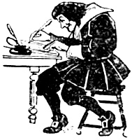

“Between the Castle and the River Cree
Lies enough o’ gold to set a’ Scotland free.”
The spell of the White Lady for good or evil is exercised no longer in the ancestral home of the Dunbars of Machermore.
Between Kirkdale House and Cassencarry, on the beautiful sea-girt road leading from Creetown to Gatehouse, there stood many years ago a little cottage in a sequestered situation among the woods, where a young girl was murdered by her sweetheart under the saddest of circumstances.
In and around the cottage immediately afterwards unaccountable noises were heard, and the ghost of the unfortunate girl seen, which curiously enough, as the tradition tells, at once ceased when the young man was brought to justice.
There is also a further tradition about a gypsy killing a woman near Kirkdale Bridge. At twelve o’clock at night, it is said, the ghost of a woman with half of her head cut off, and all clad in white, appears at Kirkdale Bridge, and slowly wends its way along the road and disappears by the wooded pathway leading to Kirkdale Bank.(84) This apparition is firmly believed in by folks in that locality.
The district of Dalry has furnished us with tales of witch and fairy lore. Of ghost tradition there are also authentic details, of which the most important concerns the old mansion-house of Glenlee. The following details are extracts from a paper on the subject contributed to the Gallovidian (Winter, 1900):—
“In the north of Kirkcudbrightshire, in the beautiful district of the Glenkens, on the banks of the Ken, nearly opposite to the village of Dalry but on the other side of the river, stands the fine mansion-house of Glenlee Park, at one time the residence of Lord Glenlee, one of the Judges of the Court of Session. Silent and solitary, and untenanted for years now except by a caretaker, this eligible residence has the reputation of being haunted by a lady who walks about dressed in grey silk.
A lady, who is still alive, tells how the grey lady appeared to her one evening as she was sitting in front of her dressing-glass waiting on her maid to come and do up her hair. While looking into the mirror she became aware of someone or something behind her, and then saw a lady enter by the door of her room, pass across the floor, and disappear through a door which communicated with a dressing-room. As the house was full of company at the time she wondered whether some of the strangers had mistaken the way to her room; but she waited in vain for her return, and just as she was thinking of going to explore the mystery it occurred to her that there had been no sound of doors opening or of footfalls on the floor, nor was there any sound in the direction in which the lady had disappeared, and finally it struck her that the lady was not dressed like anyone in the house.
On another occasion the same lady was sitting up with her husband, who was seriously ill, and during the night a kind of rap was heard on the door, or about the door, which roused her to go and see what it was. Upon opening the door a face stared at her, but spoke not, and passed silently along the dimly-lighted corridor out of sight.
A guest at Glenlee, before going off to some entertainment one evening ran up to his bedroom for something or other, and to his surprise there was a lady standing at his dressing-table putting some finishing touches to her toilette. He at once withdrew, thinking that some of the ladies in the hurry of the moment had gone into the wrong bedroom. When he came down again they were all upon the point of departure, and called to him to come along—but before getting into the carriage he said,
‘You have forgotten one of the ladies.’
‘Oh, no!’ they said, ‘everyone is here, and but for your lingering we should have been off.’
One evening at dark the butler was hastening down the avenue on some errand to the lodge-keeper’s, when suddenly a lady hurried past him, and he heard nothing but a faint rustle as of her dress, or the faint flickering of the remaining autumn leaves in the breeze overhead. As it was at a time when all the ladies were supposed to be indoors curiosity piqued him to follow her and watch her movements. She hurried on without once looking round, and finally disappeared through a disused cellar door which he knew to be locked and rusted from want of use. Not till then did it strike the butler that there was anything uncanny about the lady that had hurried past him in the gloom of the evening.
No satisfactory explanation of these unpleasant experiences has ever been established.
Mr Blacklock, in his notes on Twenty Years’ Holidaying in the Glenkens, makes mention of the Glenlee ghost, and adds that Lady Ashburton was said to have poisoned her husband, who was afflicted with morbus pediculus. ‘Whatsoever a man soweth that shall he also reap’—and there is a further tradition that Lady Ashburton’s butler poisoned her in turn, in order to possess himself of some valuables which he coveted.

The Headless Piper of Patiesthorn.
Sketch by J. Copland, Dundrennan.
The disturbances are chiefly connected with the old part of the house, the bedroom and dressing-room previously mentioned, which seem to be the chief haunts of this yet unlaid ghost.”
In the village of Dalry itself there stood a row of houses called Bogle-Hole, on the site now occupied by the school. In one of these houses a man was said to have poisoned his wife, and the ghost of the murdered woman has, according to credible authority, appeared even within recent years.
The following singular story is connected with the lonely district of the Moor of Corsock:
“Many years ago a drover, while making his way north and crossing that wild and thinly populated district which lies between the head of the parish of Parton and the Moor of Corsock had the following uncanny experience: He had left the Parton district late in the afternoon with the intention of reaching a farm-house some miles north of the village of Corsock. By the time he reached the path over Corsock Hill, however, it had become dark, and occasional flashes of lightning foretold that a storm was at hand. With loud peals of thunder, vivid flashes of lightning, and a downpour of rain the storm at last broke. The only shelter near at hand was some thorn bushes by the roadside, under which the drover crept and stayed for fully an hour, while the storm raged and the darkness increased. When the storm had somewhat abated the drover set out once more, hurrying as fast as the darkness would allow him. He had reached a very desolate part of the moor when his collie gave a low whine and crept close to his master’s heels. The drover stood up for a moment to try and find a reason for the dog’s behaviour, when down in the glen between the hills he heard what at first appeared the sound of bagpipes, which increased quickly to a shrill piercing wailing that struck terror to his heart, the collie creeping closer and closer to his heel whining in a way that showed he was as much frightened as his master.
Standing irresolute, a blaze of blue light flashed right in front of him, in the centre of which appeared the figure of a piper, his pipes standing like horns against the background of blue light. The figure moved backwards and forwards playing the wildest of music all the time. It next seemed to come nearer and nearer, and the drover, now transfixed to earth with terror, saw that the piper was headless, and his body so thin that surrounding hills and country could be seen right throught it. A blinding flash of fire, followed by an ear-splitting clap of thunder, brought matters to a close for the time being, and the drover fell prostrate among the heather. When he recovered his senses the strange light had gone, and with it the headless piper. The storm had cleared off, and in due time he reached the farm, where he was put up for the night. When he told his story no one spoke for a moment or two, then the farmer’s aged father broke silence: ‘Aye, aye, lad, ye hae seen the ghost o’ the piper wha was murdered on his wey frae Patiesthorn.[44] I hae had the same fearsome experience myself, tho’ its mair than saxty years syne.’”(85)
In the Dundrennan district of Kirkcudbright a persisted belief lingers concerning a headless lady haunting the Buckland Glen. The following narrative which has been handed down lends an increased interest to the tradition:—
Long ago a Monkland farmer, accompanied by one of his farm-lads, was on his return from Kirkcudbright at a very late hour. The farmer was riding a small Highland pony, the boy being on foot. It was about midnight when they got to that part of Buckland Glen where a small bridge crosses the Buckland Burn. They had just crossed the bridge when the pony suddenly stood up and swerved, almost throwing the farmer out of the saddle.
“What’s wrang wi’ ye the nicht, Maggie—what’s tae fricht ye, my lass?”
“Eh, Maister, did ye see that?” whispered the lad. “See—yonner it’s again!”
The old man looked, and muttering to himself whispered, “Aye, it’s there, laddie! It’s a’ true what hes been mony a time telt! That’s the ghost o’ the headless leddy wha was murdered in the glen in the aul’ wicked times. We’ll no gang by, but gang doon the lane and slip hame by Gilroanie.”
Turning the quivering pony they wended their way along the woods which thickly fringe the Buckland Burn, as it leads to the shore at the Manxman’s Lake, and reached home without further difficulty than keeping in hand the frightened pony. The curious fact was a week later discovered that two disreputable characters had lain in wait, for the purpose of robbery or perhaps worse, at a lonely turn on the Bombie road about a quarter of a mile from Buckland Brig. They had learned that the farmer had been to Kirkcudbright to draw a sum of money, and, had the sudden appearance of the Buckland ghost not turned their path, another tragedy might have been that night enacted in the Buckland Glen.

The Ghost of Buckland Glen.
Sketch by J. Copland, Dundrennan.
Concerning the parish of Rerwick the account of “A true relation of an apparition, expressions, and actings of a spirit which infested the house of Andrew Mackie, in Ringcroft of Stocking, in the parish of Rerwick, in the Stewartry of Kirkcudbright in Scotland, 1695, by Mr Alexander Telfair, Minister of that parish, and attested by many other persons who were also eye and ear witnesses,” will be found in its original form in the Appendix.
One of the most interesting weird stories connected with Galloway, centres round a mansion-house in the neighbourhood of Castle-Douglas.
A lady renting it for a few years tells how she was twice or thrice disturbed in the night by hearing a horse trotting round to the front door, and on getting up to look out of the window always found there was nothing to be seen, and nothing to be done but to return shivering to bed. Several years after, returning to the neighbourhood, she met the owner of the house, who asked her to go and see the improvements he had recently effected. On being shown over the house she was told that the room she had slept in had had the partition taken down between it and the dressing-room next it to make a large room, and strangely enough, when taking down the wall, a horse’s skull was discovered built into the wall.
The only connecting link to the above curious circumstance is that a former proprietor paid a hurried visit to the town of Dumfries at the time of the terrible epidemic of cholera (1832), the journey being naturally accomplished in these days on horseback. Unfortunately, he contracted the disease and died shortly after his return.
Until some years ago a huge boulder lay at the roadside on the way from Dalbeattie to Colvend, not far from the cottage known as the “Wood Forester’s.” The story was, that this was the scene of foul play long ago, the victim being a woman, whose ghost afterwards haunted the neighbourhood in the black hours of the night.
Bearing upon this, an exceedingly graphic account has been furnished the writer of such an apparition having been seen by the captain of a local coasting vessel[45] late one night as he was walking from Kippford to Dalbeattie. It made its appearance near Aikieslak, which is the next house to the “Wood Forester’s,” and not very far away. The figure walked in front, stopped when he stopped, and finally disappeared, to his intense relief, in the wood to the left.
The parish of Kirkbean is particularly rich in ghostly record, no fewer than six haunted, or once haunted localities having been noted.(86) Traversing the parish from Southwick towards Newabbey, the first eerie place of note is a field above Torrorie known as the “Murder Fall.” The ghost in this instance was that of a man who came to an untimely end by hanging.
Between Mainsriddel and Prestonmill there is a sequestered part of the road known as “Derry’s How,” once reputed to be haunted by an evil spirit in the form of a black four-footed beast. The third uncanny place was a farm-house in this same immediate neighbourhood. The ghostly manifestation was here that of sound—well-defined sounds of footsteps passing along a passage to the foot of a staircase, pausing, then seeming to return along the passage again. The sound persisted for many years, and was recognised and described by different individuals always as footsteps, which of themselves were so natural as to give rise to no alarm.
Between Prestonmill and Kirkbean—midway between the two villages—there is a small plantation, with, on the other side of the road, a larger wood. The road itself at this particular part forms a hollow. This natural arrangement of wood and road, known locally as the “Howlet’s Close,” was the reputed domain of a “lady in white,” but so little can be gleaned concerning her appearance that even the origin of the tradition seems to be quite forgotten.
The “Three Cross Roads” near Arbigland is the next spot of ghost-lore association, round which there lingers a rather romantic tale. A young lady, a member of the well-known family of Craik (of Arbigland) had fixed her affections upon a young groom in her father’s employment, a lad of good physique and manners, but, of course, apart in social status. The course of true love, however, did not run true, the romantic attachment having a most tragic ending. One day a single report of fire-arms was heard, and soon afterwards the lifeless body of the young man, whose name was Dunn, was discovered. The law took the view of suicide having been committed, but it was generally believed in the district that a brother of the young lady, incensed at her devotion to one he thought so far beneath her, had himself taken the young man’s life. This deed of violence took place at the “Three Cross Roads,” and this was the place where the victim’s ghost was afterwards reported to have been seen.
Another part of the road on the confines of the parish, and near to where it enters that of Newabbey, is associated with the midnight wanderings of yet another “lady in white,” but concerning this “poor ghost” also, tradition withholds her story.
There comes down through the long flight of centuries, a curious old story of supernatural sequence to the tragic death of John Comyn at the high altar of the Minorite Friary in Dumfries (February 10th, 1306), when the impetuous dagger-thrust of the Bruce, followed by the death dealing strokes of Kirkpatrick and Lindsay, completed the all-significant tale of murder and sacrilege.
The terrors of the day had passed, and night had fallen. With simple and earnest pomp the death-watch over the slain was being held by the troubled and anxious Friars. Wearily the hours dragged on. It was the dead of night, and many of them slumbered—all indeed, save one aged Friar, who, as the chronicler[46] tells, “with terror and astonishment heard a ghostly voice mournfully call out, ‘How long, O Lord, shall vengeance be deferred?’ and in reply an answering wail, ‘Endure with patience until the anniversary of this day shall return for the fifty-second time,’” rising to the chancel roof with terrible clearness. The aged monk bowed his head, praying earnestly that evil might be averted, but it was otherwise to fall out.
Fifty-two years have passed away, and the hand of hospitality is being extended in the fortress of Caerlaverock Castle. In the great hall the flickering firelight fitfully lights up the faces of two men who have been served with a parting cup of wine, for the hour draws late. The host is Roger Kirkpatrick, the guest James Lindsay, and they are the sons of Kirkpatrick and Lindsay, whose daggers despatched the Red Comyn. Goodwill and friendship evidently prevail as they rise to part for the night, but the rift is in the lute, and an ugly savage look comes to the face of Lindsay as he is left alone in his room in the west tower.
An hour later a stealthy figure creeps up the eastern turret stair. There is a single well-directed thrust, and deep sleep becomes the deeper sleep of death, so sure has been the stroke that sends Roger Kirkpatrick, son of “Mak’ Siccar,” to his doom.
A bridled and a saddled steed stands beyond the confines of the castle walls, and Lindsay, leaping to his seat, terror at his heart, rides into the darkness of the night. Daybreak comes, the alarm is given, and almost red-handed the murderer is taken, not three miles from the castle gates, from which he had deemed himself many leagues away.
Hurried to Dumfries, doom is pronounced, and the common place of execution claims him for its own. The ghostly call of the night, “How long?” echoing through the monastery walls, is fulfilled.
With the history of the South-western district of Scotland the life story of Sir Robert Grierson of Lag, or “Aul’ Lag,” as he is to this day called, is intimately associated. In a previous chapter we have dealt with the superstitious happenings at his death and funeral. Mention must now be made of a legend which concerns the passing of his soul, and which is not yet forgotten in Dumfries and Galloway.
The year of grace, 1733, was wearing fast towards Yule, when one stormy night a small vessel found herself overtaken, at the mouth of the Solway, by a gale of wind that was almost too much for her. Close-hauled and fighting for every foot of sea-way she was slowly forcing her way up-channel against the angry north-west blast when a strange adventure befel her. In a lull following a savage squall the moon broke through the black flying cloud, lighting up the storm-tossed sea and revealing to those aboard another struggling sail far astern. Curiously the seamen gazed, but searching glance gave place to wonder, and wonder to fear, when they saw what had at first seemed a craft like themselves, come rushing onwards in the very teeth of the wind, and with as much ease as if running “free” before it. The moon dipped, and again darkness descended on the face of the waters, but not for long. Once again the moonlight pierced the curtain of flying cloud. Then was seen what surely was the strangest craft that ever sailed the tossing Solway sea—a great State-coach, drawn by six jet-black horses, with out-riders, coachmen, and a great retinue of torch-bearers, footmen, and followers, furiously driving onwards over the foam-crested waves. As the phantom carriage plunged nearer, the skipper, regaining some little of his courage, ran forwards, hailing in sailor fashion—“Where bound? and where from?”—and the answer came back, clear and distinct across the raging waters—“To tryst with Lag! Dumfries! from—Hell!”

“To Tryst with Lag.”
Sketch by J. Copland, Dundrennan.
A similar legend exists in connection with the death of William, Duke of Queensberry, appointed High Commissioner to James VII., 1685, and whose attitude towards the Covenanters is still remembered against him.
“Concerning the death of the Duke of Drumlanrig, alias Queensberry, we have the following relation: That a young man perfectly well acquainted with the Duke (probably one of those he had formerly banished), being now a sailor and in foreign countries, while the ship was upon the coast of Naples and Sicily, near one of the burning mountains, one day they espied a coach and six, all in black, going towards the mount with great velocity; when it came past them they were so near that they could perceive the dimensions and features of one that sat in it.
The young man said to the rest—‘If I could believe my own eyes, or if I ever saw one like another, I would say that it is the Duke.’
In an instant they heard an audible voice echo from the mount—‘Open to the Duke of Drumlanrig!’ upon which the coach, now near the mount, vanished.
The young man took pen and paper, and upon his return found it exactly answer the day and hour the Duke died.”(87)
Of Drumlanrig Castle itself, the writer of Drumlanrig and the Douglases notes, that “like all old baronial residences, this castle was believed to be haunted by the ghosts of the dead. The most alarming legend was connected with what was known as the ‘Bloody Passage,’ where a foul murder had been committed, and the very spot was marked out by the stains of blood, which no housemaid’s scrubbing could obliterate. It is the passage on the south side of the castle running above the drawing-room, from which a number of bed-chambers enter. Here, at midnight, the perturbed spirit of a lady, in her night clothes, parades, bewailing her sad fate, but by whom she had suffered tradition tells not. There is also a haunted room on the east side of the castle, on the fourth storey from the ground, where in former times fearful noises used to be heard.”
Passing from Thornhill to Moniaive by way of Penpont and Tynron a conspicuous land-mark is the truncated peak of Tynron Doon, the abrupt ending of the hill range dividing the valley of the Scaur from that of the Shinnel. Round Tynron Doon there linger memories of a spectre in the form of a headless horseman restlessly riding a black horse. The local tradition is, that the ghost was that of a young gentleman of the family of M‘Milligan of Dalgarnock, who had gone to offer his addresses to the daughter of the Laird of Tynron Castle. His presence was objected to, however, by one of the young lady’s brothers. Hot words followed, and in high wrath the suitor rode off; but mistaking his way he galloped over the steepest part of the hill and broke his neck, and so, with curses and words of evil on his very lips, his spirit was not allowed to pass untroubled to the realms beyond.
In the adjoining parish of Glencairn the following ghost vestiges have been gleaned:—“At Auchenstroan and Marwhirn a white woman is seen; at Pentoot and Gaps Mill ‘pens’ a crying child (supposed to have been murdered) is heard. The Nut Wood at Maxwellton was long supposed to harbour an emissary of the Evil One, and woe betide the traveller who failed to gain the running waters of Cairn or Shinnel. Jarbruck and Kirkland bridges were also of evil repute.”(88)
In the district of Sanquhar there are numerous stories of supernatural appearance and ghostly visit.
Connected with Sanquhar Castle, or Crichton Peel as it is otherwise termed, now a ruined remnant, there are two distinctive ghost legends.
The first is concerned with the fate—in the far-off old unhappy days—of a servitor of Sir Thomas Kirkpatrick of Closeburn, who “suffered” innocently at the hands of the sixth Lord Crichton. In this instance the ghost was not seen, but manifested its presence by strange chain-clanking noises within the castle walls.
The other is yet another “Lady in White,” whose rare appearance foretold grief or misfortune to the Crichton family. The legend runs that it was the ghost of a young maiden who had been wronged and murdered by one of the Lords of Sanquhar.
Littlemark, a small farm on the Eliock estate, three miles from Sanquhar, was the scene, some two hundred years ago, of the murder of a pedlar, who came into the district with a large and valuable quantity of goods carried on a pack-horse.
The ghost which was supposed to haunt the neighbourhood was curiously enough not that of the pedlar himself, but took the form of the bundle or “pack” itself, moving slowly above and along the ground.
Stories which tell of the visitations and appearances of the ghost of Abraham Crichton, erstwhile Provost of Sanquhar, are to this day well remembered in the district. A merchant in Sanquhar, he seems in life to have been a shrewd and active citizen, with the reputation of being very wealthy. In 1734 he became Provost, succeeding his brother in that office, and also inheriting the possession of Carco. But evil days came, and in 1741 he was declared a bankrupt. The deed which seems chiefly to have marked him out for unrest in the next world was the share he took in the abolition of the services in the old parish church of Kirkbride and of its existence as a separate parish. An actual attempt, at his instigation, to “ding doon the Whigs’ sanctuary,” to use his own expression, was frustrated by Divine intervention—it was said—in the form of a violent storm. The workmen were obliged to desist, and shortly afterwards Abraham met his death by a fall from his horse near Dalpeddar. With this as an introduction, let Dr Simpson continue the story as it is set down in the History of Sanquhar:—“Though declared a bankrupt before his death, the good people of Sanquhar were convinced that he must have somewhere secreted his money, and acted a fradulent part. On this account it was supposed that he could not rest in his grave, and hence the belief of his frequent appearances in the sombre churchyard, to the affrightment of all and sundry who passed near the burying-ground in the evening dusk. The veritable apparition of this worthy was firmly credited by the populace, who were kept in a state of perpetual alarm. Many a maid, with her milk-pail on her head, dashed the whole to the ground when the ghost showed himself at a kirkyard wall, and ran home screaming with affright, and finally fell on the floor in a faint. The exploits of the resuscitated Provost was endless. He assailed all who dared to pass near his resting-place, young and old, men and women. The consternation became universal, the attention of the whole district was directed to the subject, which, indeed, became a topic of discussion throughout the south-west of Scotland. Its merits were discussed also in the Edinburgh forum, and attracted the attention of the learned North Briton, Thomas Rudiman.[47]
At length the matter came to a crisis, and it was found necessary to do something to allay the popular excitement. In those days it was believed that certain sacred charms were effectual in allaying a ghost, and that the charm, whatever it might be, was chiefly to be employed by a minister of the gospel. The next thing, then, was to find a person of this order who had the sanctity and fortitude necessary to accomplish the feat. The individual fixed on was a venerable minister of the name of Hunter, in the parish of Penpont. During the night he went to the churchyard, and on the following day gave out that he had laid Abraham’s ghost, and that in future no person need have the least alarm in passing the churchyard, as he never again would trouble anyone. Mr Hunter’s statement was implicitly believed, and nothing supernatural has since been seen within the ancient burying-ground of Sanquhar. To add to the seeming mystery which Mr Hunter wished to keep up, when questioned on what he had said or done to the spirit he replied, ‘No person shall ever know that.’ In order, however, to prevent all such annoyances for the time coming, and to retain Abraham more effectually within the bounds of his narrow cell, it was deemed prudent to keep down the flat gravestone with a strong band of iron or stout chain. This precaution, it was supposed, would keep the popular mind more at ease.”
To Poldean, in Wamphray, situated at the north-west corner of the parish, on the Annan, about five miles from Moffat, there is a curious old-world ghost reference in Law’s Memorials, edited by Kirkpatrick Sharp. In the narrative, which is here given, Poldean is described as “Powdine in Annandale”:—
“Also in the south-west border of Scotland, in Annandale, there is a house called Powdine belonging to a gentleman called Johnston; that house hath been haunted these fifty or sixty years. At my coming to Worcester, 1651, I spoke with the gentleman (being myself quartered within two miles of the house). He told me many extraordinary relations consisting in his own knowledge; and I carried him to my master, to whom he made the same relations—noises and apparitions, drums and trumpets heard before the last war; yea, he said, some English soldiers quartered in his house were soundly beaten by that irresistible inhabitant.... He tells me that the spirit now speaks, and appears frequently in the shape of a naked arm.”
Three and a half miles north-east of Lochmaben, on the banks of the Annan, stands the turreted ruin of Spedlins Tower, the old home of the Jardines of Applegarth.
Grim, gaunt, and lonely, one of the best accredited ghost legends in the south-west of Scotland lingers round its walls. The story has been told many times, and the version here selected is that of Francis Grose, the antiquary, who described the Tower in his Antiquities of Scotland (1789-91):—
“Spedlins Tower is chiefly famous for being haunted by a bogle or ghost. As the relation will enliven the dullness of antiquarian disquisition, I will here relate it as it was told me by an honest woman who resides on the spot, and who, I will be sworn from her manner, believed every syllable of it. In the time of the late Sir John Jardine’s grandfather, a person named Porteous, living in the parish of Applegarth, was taken up on suspicion of setting fire to a mill, and confined in the lord’s prison, the pit or dungeon, at this castle. The lord being suddenly called to Edinburgh on some pressing and unexpected business, in his hurry forgot to leave the key of the pit, which he always held in his own custody. Before he discovered his mistake and could send back the key—which he did the moment he found it out—the man was starved to death, having first, through the extremity of hunger, gnawed off one of his hands. Ever after that time the castle was terribly haunted till a Chaplain of the family exorcised and confined the bogle to the pit, whence it could never come out, so long as a large Bible, which he had used on that business, remained in the castle. It is said that the Chaplain did not long survive this operation. The ghost, however, kept quietly within the bounds of his prison till a long time after, when the Bible, which was used by the whole family, required a new binding, for which purpose it was sent to Edinburgh. The ghost, taking advantage of its absence, was extremely boisterous in the pit, seeming as if it would break through the iron door, and making a noise like that of a large bird fluttering its wings. The Bible being returned, and the pit filled up, everything has since remained perfectly quiet. But the good woman declared, that should it again be taken off the premises no consideration whatever would induce her to remain there a single night.”
Jardine Hall, the new home of the Jardines, to which the family had removed, is situated on the opposite side of the river Annan, its windows overlooking the old walls of Spedlins Tower. It also was by no means free from a share of the haunting of the dead miller, for during the time the Bible had gone to Edinburgh to be re-bound, the ghost, getting out of the dungeon, crossed the river and presented itself at the new house, making a great disturbance, and actually hauling the baronet and his lady out of bed. Some accounts indeed, say that so terrifying was its behaviour that the unhappy owner of Jardine Hall refused to wait until the Bible was repaired, but recalled it hastily before it reached the Capital, in order that its holy presence might quell the restless spirit and keep it confined to its dungeon.
The Bible which plays so prominent a part in the story is an old black-letter edition, printed by Robert Baker, A.D. 1634. It is covered with old calf-skin, and inclosed in a massive brass-bound box made out of one of the old beams of Spedlins Tower itself, which, needless to say, is most carefully preserved.
The spirited ballad of “The Prisoner of Spedlins,” by Robert Chambers, may here not inappropriately be included:—
To Edinburgh, to Edinburgh,
The Jardine he maun ride;
He locks the gates behind him,
For lang he means to bide,
And he, nor any of his train,
While minding thus to flit,
Thinks of the weary prisoner
Deep in the castle pit.
They were not gane a day, a day,
A day but barely four,
When neighbours spake of dismal cries
Were heard from Spedlins Tower.
They mingled wi’ the sighs of trees
And the thud-thud o’ the linn;
But nae ane thocht ’twas a deein’ man
That made that eldrich din.
At last they mind the gipsy loon
In dungeon lay unfed;
But ere the castle key was got
The gipsy loon was dead.
They found the wretch stretch’d out at length
Upon the cold, cold stone,
With starting eyes and hollow cheek,
And arms peeled to the bone.
······
Now Spedlins is an eerie house,
For oft at mirk midnight
The wail of Porteous’ starving cry
Fills a’ that house wi’ fright:
“O let me out, O let me out,
Sharp hunger cuts me sore;
If ye suffer me to perish so,
I’ll haunt you evermore.”
O sad, sad was the Jardine then,
His heart was sorely smit;
Till he could wish himself had been
Left in that deadly pit.
But “Cheer up,” cried his lady fair,
“’Tis purpose makes the sin;
And where the heart has had no part
God holds his creature clean.”
Then Jardine sought a holy man
To lay that vexing sprite;
And for a week that holy man
Was praying day and night.
And all that time in Spedlins House
Was held a solemn fast,
Till the cries waxed low, and the boglebo
In the deep red sea was cast.
······
There lies a Bible in Spedlins Ha’,
And while it there shall lie
Nae Jardine can tormented be
With Porteous’ starving cry.
But Applegarth’s an altered man,
He is no longer gay;
The thought of Porteous clings to him
Until his dying day.
The mansion-house of Knockhill, in the parish of Hoddom, was the scene of a tragedy in the earlier part of last century, which had the sequence of ghost visitation. It is referred to in the “Irvings of Hoddom,” an interesting contribution to the family history of the district. Shortly the story is as follows:—A young man named Bell who had been surreptitiously visiting his sweetheart, one of the maids in the house, was heard by the butler, who shot him as he was escaping through a basement window. The butler was tried and acquitted, but Knockhill was afterwards haunted by the ghost of the victim so much that servants would not remain. At last the proprietor, then a Mr Scott, asked the Rev. W. Wallace Duncan, then helper to Mr Yorstoun, parish minister, to sleep in the house, with the result, it is told, that from then the ghost disappeared from Knockhill.(89)
In this same parish of Hoddom, the student of Carlyle will remember that “old John Orr,” the only schoolmaster that Carlyle’s father ever had, “laid a ghost.” It was in “some house or room at Orchard, in the parish of Hoddom. He entered the haunted place, was closeted in it for some time, speaking and praying. The ghost was really and truly laid, for no one heard more of it.”(90)
Bonshaw Tower, on the Kirtle (parish of Annan), the original home of the Irvings, also contributes to the ghost-lore of the district.
Tradition tells that a daughter of the house was thrown from the battlements of the Tower by her own relatives, whom she had deeply incensed by her determination to marry a “Maxwell,” with which family the Irvings held long and bitter feud. It is, or rather was, the ghost of this young lady who haunted the Tower of Bonshaw, but she has not been visible within living memory.
Blackett Tower, also on the Kirtle (parish of Kirkpatrick-Fleming), was a border fortress well known in the records of border raid and foray. It was for long the home of the family of Bell.
The ruined tower has a ghost legend which claims it as the abode of a spectre known as “Old Red-Cap, or Bloody Bell.” A poetical descriptive reference to the tower and its phantom occurs in the poem of “Fair Helen.” The passage is of undoubted vigour and masterly touch, and is here given, the author, William Scott Irving, at the same time offering the opinion “that the legends and anecdotes of ‘Bloody Bell’ would fill a large quarto volume”:
Of Blackett’s Towers strange tales are told:
The legendary lore of old,
That dread belief, whose mystic spell
Could people Gothic vault or cell
With being of terrific form,
And superstition bound the charm.
’Tis said, that here, at the night’s high noon,
When broad and red the eastern moon
Beams through the chinks of its vast saloon,
A ghastly phantom takes its stand
On the wall that frowns o’er wear and strand,
A bloody dagger in its hand,
And ever and aye on the hollow gale
Is heard its honorie and wail
Dying along the distant vale.
The ’nighted peasant starts aghast
To hear its shriekings on the blast;
Turns him to brave the wintry wind,
Nor dares he lingering look behind,
But hurries across the moaning flood,
And deems its waters swollen with blood—
Such are the tales at Lyke-wake drear,
When the unholy hour of night draws near,
When the ban-dog howls, and the lights burn blue,
And the phantom fleets before the view;
When “Red-Cap” wakes his eldrich cry,
And the winds of the wold come moaning by.(91)
The Old Hall of Ecclefechan (Kirkconnel Hall) is also supposed to be haunted. Little is known about it, but the opinion has been expressed that “the mysterious apparition of the ‘Ha’ Ghost’ seems to have haunted the place from the distant past, and its mysterious and noisy demonstrations have from time to time disturbed the residents. It is said to make its appearance before and at the time of the death of any member of the family.”(92)
In the parish of Eskdalemuir there is a farm-house called Todshawhill. It is on the Black Esk, about three miles in a south-westerly direction from the Parish Church. With the name of this farm there is associated the memory of something uncanny, known far and wide as the “Bogle of Todshawhill.” It seems rather to have been a “brownie” than a “ghost,” but some account of it is here given as described by Dr Brown and embodied in an antiquarian account of the parish. According to Dr Brown, one of the bogle’s biographers, this creature made a stay of a week, less or more, at Todshawhill farmhouse, disappearing for the most part during the day, only to reappear towards evening. Its freaks and eccentricities very naturally attracted a number of people to the neighbourhood, and among the number, Thomas Bell from Westside, the neighbouring farmer, who, in order to assure himself that it had flesh and blood like other folks, took it up in his arms and fully satisfied himself that it had its ample share of both. In appearance it resembled an old woman above the middle, with very short legs and thighs, and it affected a style of walk at once so comical and undignified that the Rev. Dr aforesaid was compelled to pronounce it “waddling.” The first intimation or indication of its presence in these parts was given, I understand, at the head of Todshawhill Bog, where some young callants who were engaged in fastening up the horses of the farm heard a cry at some little distance off—“Tint, Tint, Tint”—to which one of the lads, William Nichol by name, at once replied, “You shall not tine and me here,” and then the lads made off, helter-skelter, with the misshapen little creature at their heels. In his terror one of the lads fell head foremost into a hole or moss hag, and the creature, “waddling” past him to get at the rest, came into violent contact with a cow, which, naturally resenting such unceremonious treatment, pushed at it with its horns, whereupon the creature replied, “God help me, what means the cow?” This expression soothed, if it did not wholly allay, the fears of all concerned, for they at once concluded that if the creature had been a spirit it would not have mentioned the name of Deity in the way it did.(93)
The last account to be quoted of supernatural visitation in the south-western district of Scotland is a particularly striking one, and is taken from an interesting contribution to a recent number of Chambers’s Journal dealing with apparitions:—
“In the Lowlands of Scotland stood an old manor house, where the owner’s wife was on her death-bed. The ancient furniture still remained in the room, so the invalid lay in a four-post bed, with curtains all round it, wherein many generations of the family had been born and died. The curtains were drawn at its foot and on the side nearest the wall, but they were open on the other to a blazing fire, before which sat an attendant nurse. A tall screen on her left hand shielded her from the draught from a door, whose top was visible above it; and as the nurse sat there she became conscious that the door was opening and that a hand seemed to rest for a moment on the top of the screen. Presently, as she watched, half-paralysed with fear, a figure appeared from behind the screen—the figure of a young woman clothed in a sacque of rich brocade, over a pink silk petticoat, and wearing a head-dress of the time of Queen Anne. This figure advanced with a gentle undulating movement to the bed and bent down over it. Then the nurse jumped up and stretched out her hand to the bell-pull; and, lo! when she looked again the figure had vanished, and her patient lay there dead, with an expression of rapturous content on her sunken face.(94)
Later, when the last sad rites had been accomplished, this nurse wandered into the picture gallery in company with the housekeeper, and pausing before a certain portrait, exclaimed that there was the original of the unknown lady.
‘Ah,’ came the answer, ‘that lady lived here when Queen Anne was on the throne. They say she had a sad life with her lord, and died young. Ever since she is believed, when the mistress of the manor dies, to appear beside the bed, and—and’——
‘You need not tell me more,’ said the nurse, ‘for I also have seen her.’”(94)
No account of superstitious belief in Galloway would be complete without reference to three remarkable tracts, giving quaint and circumstantial accounts of alleged supernatural visitations from the spirit-world beyond. In their order of publication these are—(a) “The Surprising Story of the Devil of Glenluce”; (b) “A True Account of an Apparition which infested the house of Andrew Mackie, in Ringcroft, Parish of Rerwick, and Stewartry of Kirkcudbright in 1695, ... Mr Alexander Telfair”; and (c) “The Laird o’ Coul’s Ghost.”
The “Devil of Glenluce” first appeared in an old work on Hydrostaticks by George Sinclair, Professor of Philosophy and afterwards of Mathematics in the University of Glasgow. This work was published in 1672. It was again printed in his more important work, Satan’s Invisible World, in 1685. The theme is concerned with the persecution of one Gilbert Campbell, a weaver, and his family, in the village of Glenluce, by an evil and tormenting spirit. As a chapbook this curious work had a very wide circulation.
The “True Account of the Rerwick Apparition” when first published called for two editions within the first year, and with many alterations it was also published in London under the title of “New Confutation of Sadducism, being a narrative of a Spirit which infested the house of Andrew Mackie of Ringcroft, Galloway, in 1695.” Only the site of Ringcroft of Stoking, marked by some old fir trees, remains, near the village of Auchencairn.
“The Laird o’ Coul’s Ghost” seems to have originally appeared as a chapbook, and is thought to have been first published in 1750. It is supposed to be—and the purpose is quaintly carried out—an account of four conferences which the Rev. William Ogilvie (Minister of Innerwick, East Lothian, 1715-1729), held with the restless spirit of Thomas Maxwell, Laird of Cuil, a small estate in the parish of Buittle, in Galloway, and who in his lifetime had done a dishonourable action which tormented him beyond the grave.
As these tracts have a direct bearing on the general consideration of superstitious record in the South-west of Scotland, and as they are not particularly easy of access, it has been deemed advisable to reprint them, and include them as an appendix to this volume.

“Surprising Story of the Devil of Glenluce,” reprinted from Satan’s Invisible World, written by George Sinclair, and printed in Edinburgh in the year 1685.
This is that famous and notable Story of the Devil of Glenluce, which I published in my Hydrostaticks, anno 1672, and which since hath been transcribed word by word by a learned pen, and published in the late book intitutled Saducismus Triumphaius, whom nothing but the truth thereof, and usefulness for refuting Atheism could have perswaded to transcribe. The subject matter then of this story is a true and short account of the troubles wherewith the family of one Gilbert Campbel, by profession a Weaver in the old Parish of Glenluce in Galloway, was exercised. I have adventured to publish it de novo in this book, first because it was but hudled up among purposes of another nature. But now I have reduced it to its own proper place. Next, because this story is more full, being enlarged with new additions, which were not in the former, and ends not so abruptly, as the other did.
It happened (says my informer, Gilbert Campbel’s son, who was then a student of philosophy in the Colledge of Glasgow) that after one Alexander Agnew, a bold and sturdy beggar, who afterwards was hanged at Drumfries for blasphemy, had threatened hurt to the familie because he had not gotten such an almes as he required, the said Gilbert Campbel was often-times hindered in the exercise of his calling, and yet could not know by what means this was done. This Agnew, among many blasphemous expressions had this one, when he was interrogate by the judges whether or not he thought there was a God, he answered, he knew no God but salt, meal, and water. When the stirs began first there was a whistling heard both within and without the house. And Jennet Campbel, going one day to the well to bring home some water, was conveyed with a shril whistling about her ears, which made her say, “I would fain hear thee speake as well as whistle.” Hereupon it said, after a threatening manner, “I’le cast thee Jennet into the well.” The voice was most exactlie like the damsel’s voice, and did resemble it to the life. The gentlewoman that heard this and was a witness thought the voice was very near to her own ears, and said the whistling was such as children use to make with their smal slender glass whistles.
About the middle of November the Foul-Fiend came on with new and extraordinary assaults, by throwing of stones in at the doors and windows and down the chimney-head, which were of great quantity and thrown with force, yet by God’s providence there was not one person in the family that was hurt. This did necessitate Gilbert Campbel to reveale that to the Minister of the Parish and to some other neighbours and friends which hitherto he had suffered secretly. Notwithstanding of this, his trouble was enlarged; for not long after he found often-times his warp and threeds cut as with a pair of sizzers, and not only so, but their apparel were cut after the same manner, even while they were wearing them—their coats, bonnets, hose, shoes—but could not discern how or by what mean. Only it pleased God to preserve their persons, that the least harm was not done. Yet in the night time they had not liberty to sleep, something coming and pulling their bedcloaths and linnings off them and leaving their bodies naked. Next their chests and trunks were opened and all things in them strawed here and there. Likewise the parts of their working-instruments which had escaped were carried away and hid in holes and bores of the house, where hardly they could be found again. Nay, what ever piece of cloath or household-stuff was in any part of the house it was carried away and so cut and abused that the goodman was necessitate in all haste and speed to remove and transport the rest to a neighbour’s house, and he himself compelled to quite the exercise of his calling, whereby he only maintained his family. Yet he resolved to remain in his house for a season; during which time some persons about, not very judicious, counselled him to send his children out of the family here and there to try whom the trouble did most follow, assuring him that this trouble was not against the whole family, but against some one person or other in it, whom he too willingly obeyed. Yet, for the space of four or five dayes there were no remarkable assaults as before. The Minister hearing thereof shewed him the evil of such a course, and assured him that if he repented not and called back his children he might not expect that his trouble would end in a right way. The children that were nigh by being brought home, no trouble followed, till one of his sons called Thomas that was farest off came home. Then did the Devil begin afresh, for upon the Lord’s Day following, in the afternoon, the house was set on fire; but by the help of some neighbors going home from sermon, the fire was put out and the house saved, not much loss being done. And Munday after being spent in private prayer and fasting, the house was again set on fire upon the Tuesday about nine o’clock in the morning, yet by the speedy help of neighbors it was saved, little skaith being done.
The Weaver being thus vexed and wearied both day and night, went to the Minister of the Parish, an honest and Godly man, desiring him to let his son Thomas abide with him for a time, who condescended, but withal assured him that he would find himself deceived; and so it came to pass, for notwithstanding that the lad was without the family yet were they that remained in it sore troubled both in the day time and night season, so that they were forced to wake till midnight and sometimes all the night over, during which time the persons within the family suffered many losses, as the cutting of their cloaths, the throwing of piets, the pulling down of turff and feal from the roof and walls of the house, and the stealing of their cloaths, and the pricking of their flesh and skin with pins.
Some Ministers about, having conveened at the place for a solemn humiliation, perswaded Gilbert Campbel to call back his son Thomas, notwithstanding of whatsoever hazard might follow. The boy returning home affirmed that he heard a voice speak to him, forbidding him to enter within the house or in any other place where his father’s calling was exercised. Yet he entered, but was sore abused, till he was forced to return to the Minister’s house again.
Upon Munday, the 12 of February, the rest of the family began to hear a voice speak to them, but could not well know from whence it came. Yet from evening till midnight too much vain discourse was kept up with Satan, and many idle and impertinent questions proposed, without that due fear of God that should have been upon their spirits under so rare and extraordinary a trial. They came that length in familiar discourse with the Foul-Thief that they were no more afrayed to keep up the clash with him than to speak to one another. In this they pleased him well, for he desired no better than to have sacrifices offered to him. The Minister, hearing of this, went to the house upon the Tuesday, being accompanied with some gentlemen, one James Bailie of Carphin, Alexander Bailie of Dunraged, Mr Robert Hay, and a gentlewoman called Mistris Douglas, whom the Minister’s wife did accompanie.
At their first in-coming the Devil says, “Quum literarum, is good Latine.” These are the first words of the Latine rudiments which schollars are taught when they go to the grammar school. He crys again, “A dog.”
The Minister, thinking that he had spoken it to him, said, “He took it not ill to be reviled by Satan, since his Master had troden that path before him.”
Answered Satan, “It was not you, sir, I spoke it to; I meant by the dog there,” for there was a dog standing behind backs.
This passing, they all went to prayer, which being ended, they heard a voice speaking out of the ground from under a bed in the proper countrey dialect, which he did counterfeit exactly, saying, “Would you know the witches of Glenluce? I will tell you them”—and so related four or five persons’ names that went under a bad report.
The Weaver informed the company that one of them was dead long ago.
The Devil answered and said, “It is true, she is dead long ago, but her spirit is living with us in the world.”
The Minister replied, saying (though it was not convenient to speak to such an excommunicat and intercommuned person), “The Lord rebuke thee, Satan, and put thee to silence; we are not to receive information from thee whatsoever fame any person goes under; thou are seeking to seduce this family, for Satan’s kingdom is not divided against itself.”
After which all went to prayer again, which being ended (for during the time of prayer no noise or trouble was made, except once that a loud fearful youel was heard at a distance) the Devil with many threatnings boasted and terrified the lad Tom, who had come back that day with the Minister, that if he did not depart out of the house he would set all on fire.
The Minister answered and said, “The Lord will preserve the house and the lad too, seeing he is one of the family and hath God’s warrant to tarry in it.”
The Fiend answered, “He shall not get liberty to tarry; he was once put out already, and shal not abide here, though I should pursue him to the end of the world.”
The Minister replied, “The Lord will stop thy malice against him.”
And then they all went to prayer again, which being ended, the Devil said, “Give me a spade and a shovel, and depart from the house for seven days, and I will make a grave and ly down in it, and shall trouble you no more.”
The goodman answered, “Not so much as a straw shal be given thee through God’s assistance, even though that would do it.” The Minister also added, “God shal remove thee in due time.”
The Spirit answered, “I will not remove for you; I have my commission from Christ to tarry and vex this family.”
The Minister answered, “A permission thou hast indeed, but God will stop it in due time.”
The Devil replied, “I have, sir, a commission which perhaps will last longer than your own.”
The Minister died in the year 1655, in December. The Devil had told them that he had given his commission to Tom to keep.
The company enquired at the lad, who said there was a something put into his pocket, but it did not tarry.
After this the Minister and the gentlemen arose and went to the place whence the voice seemed to come, to try if they could see or find any thing. After diligent search, nothing being found, the gentlemen began to say, “We think this voice speaks out of the children,” for some of them were in their beds.
The Foul-Spirit answered, “You lie; God shall judge you for your lying, and I and my father will come and fetch you to hell with warlock thieves:” and so the Devil discharged the gentlemen to speak any thing, saying, “Let him speak that hath a commission (meaning the Minister), for he is the servant of God.”
The gentlemen, returning back with the Minister, sat down near the place whence the voice seemed to come, and he opening his mouth spake to them after this manner: “The Lord will rebuke this spirit in his own time and cast it out.”
The Devil answering, said, “It is written in the 9th of Mark, The Disciples could not cast him out.”
The Minister replyed, “What the Disciples could not do, yet the Lord, having hightned the parents’ faith, for His own glory did cast him out and so shall He thee.”
The Devil replyed, “It is written in the 4th of Luke, ‘And He departed and left him for a season.’”
The Minister said, “The Lord in the dayes of His humiliation not only got the victory over Satan in that assault in the wilderness, but when he came again his success was no better, for it is written (John 14), ‘Behold the Prince of this World cometh and hath nothing in me,’ and being now in glory He will fulfil His promise, and (Rom. 16) ‘God shal bruise Satan under your feet shortly.’”
The Devil answered, “It is written (Matth. 25) ‘There were ten virgins, five wise & five foolish; and the bridegroom came, the foolish virgins had no oyl in their lamps, and went unto the wise to seek oyl, and the wise said, Go and buy for your selves; and while they went the bridegroom came and entered in, and the door was shut, and the foolish virgins were sent to hell’s fire.’”
The Minister answered, “The Lord knows the sincerity of His servants, and though there be sin and folly in us here, yet there is a fountain opened to the house of David for sin and for uncleanness. When He hath washen us and pardoned our sins for His name’s sake He will cast the unclean spirit out of the land.”
The Devil answered and said, “Sir, you should have cited for that place of Scripture the 13 chap. of Zech.,” and so he began at the first verse and repeated several verses, and concluded with these words, “‘In that day I will cause the prophet and the unclean spirit pass out of the land’; but afterwards it is written, ‘I will smite the Shepherd, and the sheep shall be scattered.’”
The Minister answered and said, “Well are we that our blessed Shepherd was smitten, and thereby hath bruised thy head, and albeit in the hour of His sufferings His Disciples forsook Him (Matth. 26). Yet now having ascended on high He sits in glory, and is preserving, gathering in, and turning His hand upon His little ones, and will save His poor ones in this family from thy malice.”
The Minister returning back a little and standing upon the floor, the Devil said, “I knew not these Scriptures till my father taught me them.”
Then the Minister conjured him to tell whence he was.
The Foul-Fiend replyed that he was an evil spirit come from the bottomless pit of hell to vex this house, and that Satan was his father; and presently there appeared a naked hand and an arm, from the elbow down, beating upon the floor till the house did shake again, and also he uttered a most fearful and loud cry, saying, “Come up, Father, come up; I will send my father among you; see, there he is behind your backs.”
The Minister said, “I saw indeed an hand and an arm when the stroak was given, and heard.”
The Devil said to him, “Say you that? It was not my hand, it was my father’s: my hand is more black in the loof.”
“O,” said Gilbert Campbel, “that I might see thee as well as I hear thee!”
“Would you see me?” says the Foul-Thief; “put out the candle and I shal come butt the house among you like fire balls. I shall let you see me indeed.”
Alexander Bailie of Dunraged says to the Minister, “Let us go ben and see if there be any hand to be seen.”
The Devil answered, “No, let him come ben alone; he is a good honest man, his single word may be believed.”
About this time the Devil abused Mr Robert Hay, a very honest gentleman, very ill, with his tongue, calling him witch and warlock. A little after, the Devil cryes (it seems out of purpose and in a purpose), “A witch, a witch, ther’s a witch sitting upon the ruist, take her away:” he meant a hen sitting upon the balk of the house.
These things being past, all went to prayer, during which time he was silent. Prayer being ended, the Devil answered and said, “If the goodman’s son’s prayers at the Colledge of Glasgow did not prevail with God: my father and I had wrought a mischief here ere now.”
To which Alexander Bailie of Dunraged replied, “Well, well, I see you confess there is a God, and that prayer prevails with Him, and therefore we must pray to God, and commit the event to Him.”
To whom the Devil replied, “Yea, sir, you speak of prayer with your broad-lipped hat (for the gentleman had lately gotten a hat in the fashion with broad lipps). I’le bring a pair of shears from my father, which shall clip the lipps off it a little.” Whereupon he presently imagined that he heard and felt a pair of shears going round about his hat, which caused him lift it to see if the Foul-Thief had medled with it.
During this time several things, but of less moment, passed, as that he would have Tom a merchant, Rob a smith, John a minister, and Hue a lawier, all which in some measure came to pass. As to Jennet, the goodman’s daughter, he cryes to her, “Jennet Campbel, Jennet Campbel, wilt thou cast me thy belt?”
Quoth she, “what a widdy would thou do with my belt?”
“I would fain (says he) fasten my loose bones closs together with it.”
A younger daughter sitting busking her puppies, as young girls use to do, being threatned by the Fiend that he would ding out her harns, that is, brain her, answered without being concerned, “No, if God be to the fore,” and so fell to her work again.
The goodwife of the house having brought out some bread was breaking it, to give everyone of the company a piece.
Cryes he, “Grissel Wyllie, Grissel Wyllie, give me a piece of that hard bread (for so they call their oat cakes). I have gotten nothing this day but a bit from Marrit”—that is, as they speak in that countrey, Margaret.
The Minister said, “Beware of that, for it is a sacrificing to the Devil.”
The girle was called for, and asked if she gave him any hard bread. “No,” says she, “but when I was eating my due piece this morning something came and clicked it out of my hand.”
The evening being now far spent, it was thought fit that every one should withdraw to his own home. Then did the Devil cry out fearfully, “Let not the Minister goe home, I shall burn the house if he go,” and many other ways did he threaten.
After the Minister had gone foorth Gilbert Campbel was very instant with him to tarry, whereupon he returned, all the rest going home. When he came into the house the Devil gave a great gaff of laughter: “You have now, sir, done my bidding.”
“Not thine,” answered the other, “but in obedience to God have I returned to bear this man companie, whom thou doest afflict.” Then did the Minister call upon God, and when prayer was ended he discharged the Weaver and all the persons of the familie to speak a word to the Devil, and when it spake that they should only kneel down and speak to God.